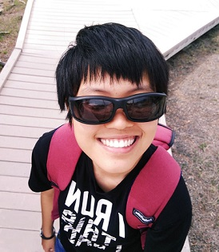

I am currently studying Computer Science at the National Uiversity of Singapore.
I will be graduating soon at the end of 2019.
My interests lie in cybersecurity, computer networks and digital forensics. See below for some of my personal projects.
- Education
-
National University of Singapore Expected gratuation - Dec 2019
Bachelor of Computing (Honours) in Computer Science
Focus areas: Networking and Distributed Systems, Computer Security
Temasek Polytechnic
Diploma in Digital Forensics with Merit
- Work Experience
-
MobileODT
Quality Assurance Engineer (internship)
- Write test scripts for company's product
- Conduct automated testing
Resolvo Systems Pte Ltd
Security consultant (internship and full-time employment)
- Penetration testing
- Web application development
Temasek Polytechnic-IBM Security Operations Centre
Security analyst/Operations manager (internship)
- Monitor and respond to security threats
- Certifications
-
OSCP Certification Expected completion - Dec 2019
- Identify existing security vulnerabilities and execute organized attacks
Red hat certified system administrator
- Certified in performing the core system administration skills required in Red Hat Enterprise Linux 6 environments
AccessData certified forensics examiner
- Certified in Forensic Toolkit (FTK) technology for data analysis and recovery
IT-DM-301S-1
- Certified in using SQL to create database structures and manipulate data
- Achievements
-
Scholarships
- IMDA IIS scholarship
- Temasek Polytechnic scholarship
Awards
- RSA Course Silver Medal
- PCS Security Special Industry Prize
- ISACA Singapore Chapter Prize
Special programs
- NUS Overseas College (NOC) Israel
- Projects
-
Karate-Gatling automated framework
- Created an automated testing framework for company’s product testing using Karate-Gatling
Selenium automated framework platform
- Created an automated functional testing platform to assist in product testing using Selenium software
Bittorrent forensics
- Constructed a BitTorrent investigation procedure
- Designed and modified a BitTorrent client to automate the identification, collection, examination of evidences related to an investigation
Research with the central narcotics bureau (CNB Singapore)
- Analyzed database and security measures for instant messaging applications
- Report and presentation of research findings to relevant officials
- Dream
- To have 2 dogs and 1 cat
- References
- Available on request